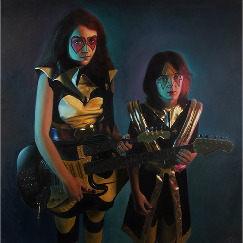

Exhibitions
Immortal Underground, Opera Gallery, New York, New York, US, November 12–December 2, 2009.
Literature
Ron English, Fauxlosophy: The Art of Ron English (San Francisco: Last Gasp, 2008), p. 112. ISBN 978-0867196566.
Ron English, Original Grin: The Art of Ron English (Paris: Cernunnos, 2019), p. 125. ISBN 978-2374950938.
Ron English, Status Factory: The Art of Ron English (San Francisco: Last Gasp of San Francisco, 2014), p. 1. ISBN 978-0867197891.
Notes
This composition was later repurposed by the artist as a limited-edition print in the Vinyl Chord: A Revolutionary Record Store series.